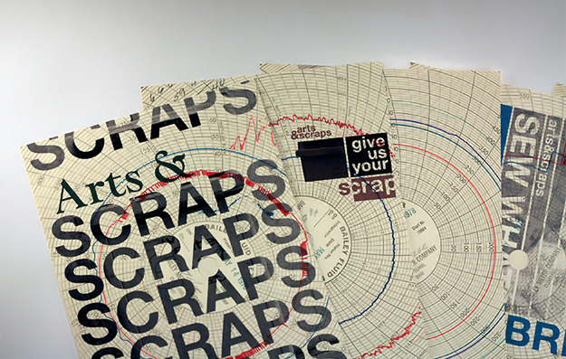

Mission Statement:
Arts & Scraps provides children with creative experiences using recycled industrial scraps to actively involve them in learning, increase their confidence and encourage independent thinking.
The Design Solution:
These solutions are meant to align with the non-wast, second life ideals of the Arts & Scraps organization. The designs are minimal in form and printed on recycled industrial papers. Either processed recycled paper or straight up found materials, such as graphs, schematics, blue prints and so on. The three themes represented throughout the series are a 'Call for Donation', a 'Fabric Sale', and a 'Self Awareness' promotional. The series consists of six deluxe post cards, a 18x 24 in poster, a mailer with premium and a micro site.